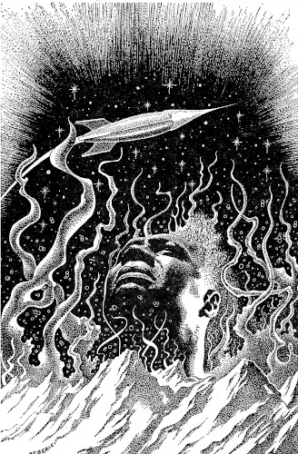

ILLUSTRATED BY EBERLE
Burt was tired of taking his family out to the asteroids
for a picnic every week-end. But with a wife and
two spoiled brats to goad him into the regular routine,
what could a man do? Only, as it turned out,
this particular picnic wasn't quite regular routine!
[Transcriber's Note: This etext was produced from
Rocket Stories, July 1953.
Extensive research did not uncover any evidence that
the U.S. copyright on this publication was renewed.]
Burt reached out for the stud that would fire the fore-rockets, but a small white hand already rested on the button.
"Let me, Daddy. You promised—"
When he wanted something, Johnny's voice took on that wailing quality. He wanted something now; Burt had promised him that he could land the ship.
"Okay," Burt said. "Press it—now. Now!"
Johnny took his hand off the stud. "Don't holler at me," he told his father severely.
Burt swore under his breath and jammed down on the stud. A red light overhead winked on and off furiously, and he knew that if he had waited another moment they would have plowed into the asteroid like a battering ram into a tub of soft butter.
"Marcia, oh Marcia!" he turned and called over his shoulder to his wife.
She stuck her head in through the galley door. "Dear," she said, "let me make these sandwiches, will you? I don't tell you how to pilot the ship, but I'll never get this lunch all packed unless you let me alone."
Burt scowled. "That's the general idea. I want to be let alone, too. So if you'll just take your darling little son the devil out of here—"
"Why, Burt Rogers! Johnny's only eight, and he's quite harmless. If I had known ten years ago that you didn't like children—"
Burt shook his head. "Joan's fine. Joan is two years younger than Johnny, but she doesn't bother anyone. She just sits in the galley and—"
"Hah!" Marcia snorted. "She sits in the galley and digs her arms into the mayonnaise tub up to the elbows, that's all."
"Well, then they're both brats."
"Burt!"
"They are, and it's your fault, Marcia. You always say let the children express themselves, we can't frustrate them or cut them short in any way—so look what happens."
"You look what happens," Marcia declared dramatically. "If we don't pull out of the dive in a couple of seconds, we'll splatter all over that planetoid."
"Let me land it, let me land it!" wailed Johnny.
Burt spun to the controls, and his fingers flicked rapidly over the buttons. He was sweating when he brought the ship down with a none-too-gentle dump. He heard Joan's whimper from inside the galley, and Marcia began to tell him what a lousy pilot he was. Johnny was playing cops and robbers with the topography through the foreport.
"This," Burt said, "is the last week-end picnic for me. Definitely the last."
Marcia opened her mouth to say something, but Burt cut her off. "I don't want to hear any more about it. You'll just have to find another way for the kids to express themselves...."
They usually found an asteroid with a weird terrain, and just looking at it through the portable bubble-sphere kept the kids pretty busy. This time, however, things were different. The asteroid was only twenty miles in diameter, yet it had an atmosphere of oxygen and inert gases, and it was comfortably warm. No bubble-sphere this time to keep the kids hemmed in—and Johnny and Joan would be roving all over the uncharted surface.
Burt shuddered. What a job he'd have today. But then, this was the last time: they could talk themselves blue in the face and plead, but this was the last time.... And maybe there'd be life, since there was air and warmth. But that was silly: a body this size would not have life, and even if Johnny took advantage of the low gravity and jumped thirty feet in the air, he wouldn't get hurt—he'd float down gently as a feather.
Marcia pouted as she spread the table-cloth out on a flat expanse of rock. Burt put his hand on her shoulder, but she pulled away from him. "Brats, eh?" she muttered.
"Well, maybe I didn't mean it that way. But you just name me another father at Marsport who takes his family up in a spaceship every Sunday to go picnicking. And a different asteroid each week. Ed Jones sits on his fanny all week-end, and Tom Ferris spends Saturday night in the gambling joints so he's dead on his feet Sunday and can hardly stay awake during the church services."
Marcia took his hand and placed it back on her shoulder. "Okay, dear—you're wonderful. But that doesn't give you permission to call my children 'brats'."
Burt smiled. "My children, too. And, well—if they're not brats, we've certainly spoiled them...."
Johnny's voice cut through the thin air. "Pop. Hey, pop. C'mere!"
Burt got up, laughing. "So that's how you teach your kids to call their old man, eh?"
Burt walked toward the incredibly close horizon. You could see the curvature of the tiny planet quite distinctly, and in a tight circle all around them the pale blue sky came down and met the jumble of rocks and crystal which was the surface of the asteroid. Johnny had called from someplace beyond the horizon, and as he walked, Burt heard him again: "You deaf, pop? C'mere!"
Johnny was standing, little hands on little hips, near a mound of dull metal. No, it wasn't a mound—it was battered and twisted and rusted, but the tear-drop shape was unmistakable. A spaceship....
Burt found the ancient airlock and pushed through the rusted door. He looked at the control panel. "It's an old Havelock," he muttered, "I'll be damned. They haven't made these in twenty years."
He went outside again, where Johnny still stood.
"Pretty nifty, eh pop?" the boy said.
Burt called: "Marcia. Hey, Marcia. C'mere!"
Leading Joan by her hand, Marcia reached them in a few minutes. "Don't wonder why Johnny called you like that, Burt Rogers. Just don't you wonder at all. He's a chip off the old block, that's what he is."
Joan said, "Mama, what's a chip off the old block?"
"Later, dear, later. What's on your mind, Burt?"
He gestured. "This—"
Marcia stared. "Why, it's—it's a spaceship!"
"It is," Johnny nodded. "An old Havelock Cruiser. And I found it."
"But these people must have crashed here years ago."
"Yeah. Look, Marcia, you better take the kids away while I look for the remains. Got to find them and report to the police at Marsport when we get back, but there's no reason why the kids have to see."
Marcia took Johnny's hand in one of her own and Joan's in the other, and she walked away with them beyond the close horizon. "Okay, Burt," she called back. "You can start looking."
Burt did not like the task ahead of him, but with general space travel still less than half a century old, lost ships were no rarity, and he considered himself morally obligated to find the bodies. He was back in the Havelock now, and it was a small ship. He covered it in five minutes, and he scratched his head. No one ... there were all the signs of occupation, but no one was around. Dishes for three were set on the plastalloy table, with a blubbery green mass on each plate, billowing over on to the table. That meant that there had been food on those dishes when, quite suddenly, the three people had disappeared. It also meant that bacteria, at least, flourished on this asteroid. And—what else? Why had the three people disappeared, why had they vanished utterly with a meal waiting for them on the table—
"Burt! Burt!" It was Marcia, and she was screaming.
Burt poked his head outside the broken airlock. Marcia was running toward the Havelock. "Burt—get out. To me, quick!"
Burt looked up. Toward the other horizon was a slight hill, not a very high one, but enough for Marcia to have seen it from beyond the horizon. And rolling down that hill now, gathering speed as it came, was a massive boulder.
Heading straight for the Havelock—
Burt scrambled up out of the airlock, cursing when his trousers caught on an edge of rusted metal. He tugged at them and heard them rip. Then he was clear and running toward Marcia.
With a great grinding crashing sound the rock plowed into the Havelock, smashing it and crushing the half-corroded metal flat. Burt looked back at a big cloud of dust, and when it cleared, the Havelock looked like so much scrap. If he had been inside he would have been crushed to a pulp. Less than a pulp, they never would have found him.
"Burt! Burt—" Marcia was sobbing against his chest. "Of all the freak accidents—"
"Uh-uh." He shook his head as they walked back to the broken remains of the Havelock. "That was no accident."
He pointed to the little hill. "That hasn't got a slope of more than ten degrees, honey. It couldn't have been an accident. The rock never could have gathered so much momentum on that hill."
"Not an accident?"
"No. Someone—something—pushed that rock."
The boulder was unmoving now, fifty yards from the scrap heap which had been the Havelock Cruiser.
Marcia said, "Someone pushed that? It's as big as the ship, Burt. It weighs five tons if it weighs an ounce. Maybe in this slight gravity—"
Burt shook his head. "Even that wouldn't account for it. That rock was pushed."
Marcia clung to him, shuddering. "Burt, let's get the children and leave this place!"
He nodded, and he was about to call Johnny, when something bounded high into the air over the horizon, then floated down, gently. "Johnny!" Marcia cried.
"He's detached his equalizer," Burt said. "That crazy kid—"
Each of them had one of the little gravity equalizers at his belt. It was a clever invention: you wore it in space flight, and you never became weightless as space-travelers did in the old days. And you wore it on any planet, creating earth-norm gravity. Now Johnny had detached his, and he weighed no more than a couple of pounds here on the tiny asteroid.
Something else bounded high into the air, came floating down. Johnny called: "Lookit us. We're birds, that's what we are. We're birds!"
Burt knew that Johnny had removed Joan's equalizer as well. Two forms came bouncing toward them over the wild terrain. "Just press the button to the left," Burt pleaded. "Press it to the left like a good boy, Johnny. You do it and we'll give you a present."
"Naa. This is fun. You try and get me."
But Joan was crying, and she did not know what to do. Every time she landed, she tried to take a step forward and she soared high into the air again. Closer bounded the two figures, and Johnny soared right by, almost near enough to touch. Burt dove for him, and came up clutching air. Johnny bounded away again, and, calling threats and taunts behind him, he disappeared over the hill, in the direction from which the boulder had come.
Marcia had been luckier. She held Joan by one arm now, re-adjusting the equalizer with her free hand. Joan sat down, crying. "I have Joan," Marcia told her husband. "You go and get Johnny, Burt. Get him—quick. I don't like this place."
Burt didn't like it, either. Something had pushed that rock.
Marcia screamed. "Burt—look."
The rocks and rubble near the remains of the Havelock were rumbling and grinding. Burt heard a great cracking sound, like a huge dead branch breaking. The ground near the Havelock trembled and the shock of it reached them. Burt sat down hard, and he saw Joan and Marcia fall in a heap.
He tried to get up, but he couldn't; the ground was still trembling. A crack appeared near the Havelock, and it crawled along the ground slowly, crookedly. It crawled at a snail's pace, less than a snail's pace—but it moved. And it grew. It was as wide as Burt's arm. Wider. It grew.
Suddenly, it gaped wide, and the grinding and rumbling was louder. It opened into a cavernous maw—right under the Havelock. For a moment the Havelock stood poised, as if on air—and then the battered; flattened ship disappeared within the hole, clattering against the walls as it fell.
The ground shuddered again, violently; the hole became a crack, closing in upon itself. It disappeared altogether, and only the rough terrain remained.
But the Havelock was gone.
Marcia stood up. "An earthquake?" She trembled.
"On a planetoid twenty miles in diameter? Don't be silly. You'd need an unstable interior for an earthquake—and this little globe cooled and stabilized long ago."
"Yes? Then why is it warm?"
She had him there, and Burt didn't know. Why was the asteroid warm? If he knew the answer to that, he might know the answer to a lot of things.
"This is stupid, Burt. Let's stop talking and find Johnny. He could be half way around the asteroid by now, or more."
Burt shook his head. "We can't all go and look. Joan would delay us. You stay here with her, Marcia—or, better still, get back to the ship with her and stay inside. I'll find Johnny and bring him back. Then we'll get the devil out of here."
Marcia smiled wanly. "That I'd like. And Burt?"
"Yeah, kid?"
"Be careful...."
Burt felt like a kangaroo. Only no earthly kangaroo had ever taken leaps like this. He had flicked the switch of the gravity equalizer over to the right, shutting off the power. Then he had taken off in great leaps, looking for Johnny. His jumps carried him forty or fifty feet in the air, and then he floated down, almost weightless.
With concentration, he could have avoided those high leaps. He could have propelled himself forward, fifty and sixty feet at a jump, but he did not want to. The horizon was too close, and the only way he could find Johnny was like this. As he reached the apex of each leap, he could see much further than he could on the ground, and he was looking for the boy.
Once he thought he saw Johnny, a tiny blob way off in the distance, but he came down from his jump too soon, and he could not be sure. He called loudly, and everything else was quiet, and his voice was almost frightening. Soon the ground felt spongy to him, but he shrugged it off. As soon as he landed, he was off again, and it probably was his imagination. Hard rock did not become spongy like this, not suddenly, without warning, with no possible explanation.
But once he landed hard, and he rested a moment, panting. He moved his feet and they slopped about, like on a muddy field. He reached down carefully. One wrong move would upset his equilibrium and he'd go shooting off into the air. He touched the ground, and it was wet. He pushed, and he felt his hand sinking in, slowly. Fascinated, he pushed again. His hand disappeared to the wrist.
Something was trying to suck him down further, and he tugged. He pulled his hand out with a loud slopping sound, and instinctively he jumped away. He soared into the air again, and when he came down, it was only for a moment—just long enough to leap.
The ground was spongy. And when he was standing there, with his hand immersed to the wrist, the soft spongy stuff had been pulsing, throbbing.
Almost as if it were alive....
His mind did not tackle the problem further. Ahead he saw Johnny—now it was more than his imagination; Johnny was there, leaping into the air ahead of him.
Burt reached the apex of his flight, cupped his hands and yelled through them:
"Johnny! Johnny!"
"Hi, pop!"
The voice came back faintly, playfully.
"Johnny, when you touch ground next time, turn that switch to the left."
"Naa—I'm having fun."
"When I get you, Johnny...."
"Aw, okay. Kill joy. What a worry wart."
Apparently, Johnny had turned on his equalizer. Burt saw him on the ground, waiting, and three big leaps brought him there.
Now Johnny was crying.
"What the devil are you crying for? You've jumped around enough—"
"Pop, please. I'm sorry. Get me outa here!"
Johnny was stuck. He was in the spongy ground, up to his ankles. The stuff sucked around his shins, drawing him down further every second, like quicksand. Burt could feel it pulsing as he landed, but it did not suck him in. With the equalizer off, he weighed much less than Johnny did, and now he was tugging at the boy, pulling at his shoulders, grabbing him under the armpits and tugging, tugging....
Johnny came loose suddenly, and Burt soared with him several feet into the air. On the way up, he switched the boy's equalizer off again, and Johnny said:
"You just told me not to, now you do it yourself. What a pop."
Johnny was spoiled and Johnny was precocious, but Burt thought of neither now. Johnny was nothing more than a little bundle which he had to get back to the spaceship. And then they had to leave, all four of them.
The spaceship ... Marcia did not know how to pilot it, she couldn't lift it off the ground. And the sucking, spongy stuff might engulf the ship, take it down into some unknown womb of the world. They'd be marooned. Marcia and Joan—
All of them.
The trip back was a wild one. Burt tucked his son under one arm and leaped. He kept low to the ground this time, skimming its surface, sometimes leaping as much as seventy feet with one bounding stride. With each stride, the ground became more spongy, and Burt realized with a sinking heart that the surface could never hold the spaceship up. It would be the same as if it had plunged through the gaping maw in the hard rock with the Havelock—either way it would be gone.
Johnny liked the ride. Every time they landed, he would say, "Again, pop. Again!" And wordless, Burt would leap once more.
Once he jumped high and he thought he saw the spaceship gleaming in the rays of the sun. But that was impossible. It would surely sink.
And then he came down and he did see it. It was there, on a hard expanse of flat rock, where he had left it. Here the ground seemed normal—
He heard Marcia's scream before he saw her. Then she came around the hull of the spaceship, dragging Joan. Screaming again, she fell flat.
Something whizzed by her head, and even from this distance Burt could see that it was a rock the size of a watermelon. She got up again, and she ran forward, but then a whole shower of rocks came after her, smaller this time, two handfuls of egg-sized rocks, thrown by an invisible giant.
He had to be invisible—Burt could see no one. Yet the rocks were being thrown, somehow. Or—the thought suddenly occurred to Burt—they were throwing themselves. The rocks moved under their own power. It was a wild thought and a crazy one, but it made sense. Every other part of the planetoid was soft and spongy. But here—near the ship—the surface was still hard. And rocks were being thrown. Burt could tell this had been happening for a long time, because the hull of the ship was scarred from the fusilade.
It was unreasonable to suppose that this tiny area, alone of the entire sphere, could not become spongy. Then there was a reason why it remained hard—and where there was reason there was sentience. And further, why hadn't a big stone been thrown, one large enough to crush their Pacemaker as the Havelock had been crushed? There certainly were enough stones around—
Everything indicated a game. Something was playing with them. They were easy prey, they were dead ducks—but something was having fun with them first. They were goners, they didn't have a chance, and that something needed the activity and the recreation. It was a sadistic game. Back on earth, some of the kids had stripped the wings off flies, made them hop about dizzily, helplessly, until they tired of the sport. And then they had crushed them....
The planetoid was playing with them!
Burt called: "Get inside the ship, Marcia! Inside!"
"I can't. If I stand still long enough to manipulate the lock, these stones will get me. Burt—"
"I'm coming!"
He switched on his equalizer and Johnny's, and still holding the boy under one arm, he plunged across the rock. Something reached up and tripped him, and he sprawled out flat. He had fallen over a small out-cropping of rock—where no out-cropping had been before.
He got up, and then he reached the Pacemaker. He pushed Johnny in front of him, and the boy stood with his sister. Marcia looked up:
"How are we going to get inside, Burt?"
"You just open the lock. Come on, now."
She turned her back and went to work on the dials. Burt stood there, waiting for the stones that would come, hunching himself over, trying to cover the three of them—
No stones came.
Instead, he heard an ominous cracking sound, a rumbling....
Off where the spongy ground joined the hard rock a crack appeared. It was small, but it grew. And it moved. It snaked along the ground, slowly, twisting, heading for the ship. Now it was half as wide as Johnny's body, and now it was wider.
Burt pushed Marcia away and attacked the lock with clumsy fingers. His hand trembled, but Marcia huddled against the side of the hull, sobbing, and he knew she could not have handled the dials in time.
Three around and then four over: damn it, there's the blue light, but he still needed the white and red. Five around and one over—ah, the white! Two around and six over—red, white, and blue!
He pushed Johnny and Joan in front of him, then he grabbed Marcia around the waist and hurled her inside. The crack was half as wide as the Pacemaker now, rumbling, churning—and growing.
He ran to the controls and he kicked the engine over. He felt the ship poise on the brink, as he had seen the Havelock do before it had plunged within a similar hole. He felt the ship totter, and then he fired the studs for all the aft rockets at once. The ship roared once and he was shoved back hard in his seat. Then they hurtled furiously sky-ward.
Below them now, the planetoid was a writhing, twisting mass, shooting pulpy tentacles miles into space, groping for them, seeking. But they were out of reach. Burt circled a few times, watching the stone globe which now was a living entity.

Behind him, Marcia watched too. "It's—alive," she said.
"Yes. Sleeping when we arrived, but it's alive now. Twenty years ago it ate the people of that Havelock, and then it became sluggish. Evidently it does not need much food, for all its vast bulk. It became sluggish and it slept, and when we landed we stirred it and it finished the job on that Havelock. Then it wanted us...."
"But alive?"
"Why not?" Burt said. "Part plant, part animal, it's warm with its own life. It breathes slowly, holding the thin atmosphere to its body, growing plants for photosynthesis when it needs oxygen, a perfectly co-ordinated being."
"So big, Burt. It's so big."
"Sure. On Mars the native life is bigger than on earth. Why?"
"Why? I don't know."
"Because Mars has a weaker gravity pull, being smaller than the earth. And here, out in space, there is no gravity to keep life down. A plant grows and grows as long as it lives, unlike an animal. This huge asteroid has been growing for ages, millions of years, maybe. What's to stop it? No gravity pressing down. Perhaps it can live purely on the mineral matter of the meteors which fall. Maybe it's only a seed, with food-matter stored up inside. Who knows?"
Johnny and Joan came out from the galley. Joan said:
"Mama, I'm hungry."
Marcia laughed. "We never did have that picnic, Burt."
"Uh-huh. You're right—so we didn't. But this damn asteroid almost did—on us."
"Papa," Johnny said, "let's land someplace and have a picnic."
"Go to hell," Burt said, forgetting he was speaking to a boy, his boy.
"Burt! Then you wonder why Johnny curses. Just watch your language in front of the children, Burt Rogers!"
"Okay," he said. "But no more picnics. I'm going to report this thing to the police, and they'll blow it out of the sky with atomite. Then we'll have a nice meal at home. But no more picnics, ever. I'll take the kids to the Canalport swimming pool on week-ends—half-way around the planet. But no more picnics."
"Please, papa," Johnny said.
Marcia nodded. "Look. He's being polite."
Burt sighed. He knew he could get away with it this week-end. But later on in the month—or certainly next month—there would be more picnics.